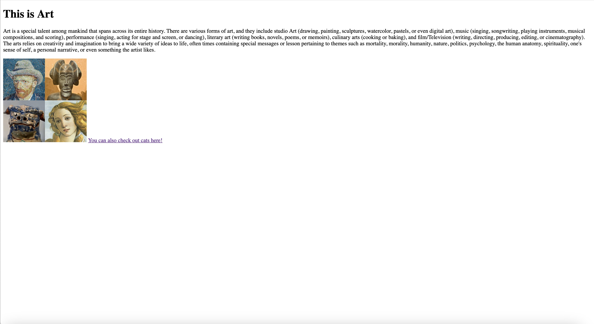

NetArt refers to the art of making website using a variety of technologies, or the websites created by those technologies. Some of the most popular tools used in making NetArt include HTML, Github, Textedit, and Wix. Such technologies provide the building blocks for making NetArt. Creators can create a variety of websites ranging from portfolios to business pages, to simple blogs, all using their now distinct visual styles (professional, psychedelic, earthy colors, etc.). However, technology may not always be your friend, and there can be some hiccups in the process of making net art, but the end result will be worth the effort put in. Check out my own NetArt here to get an idea of what can be net art!
